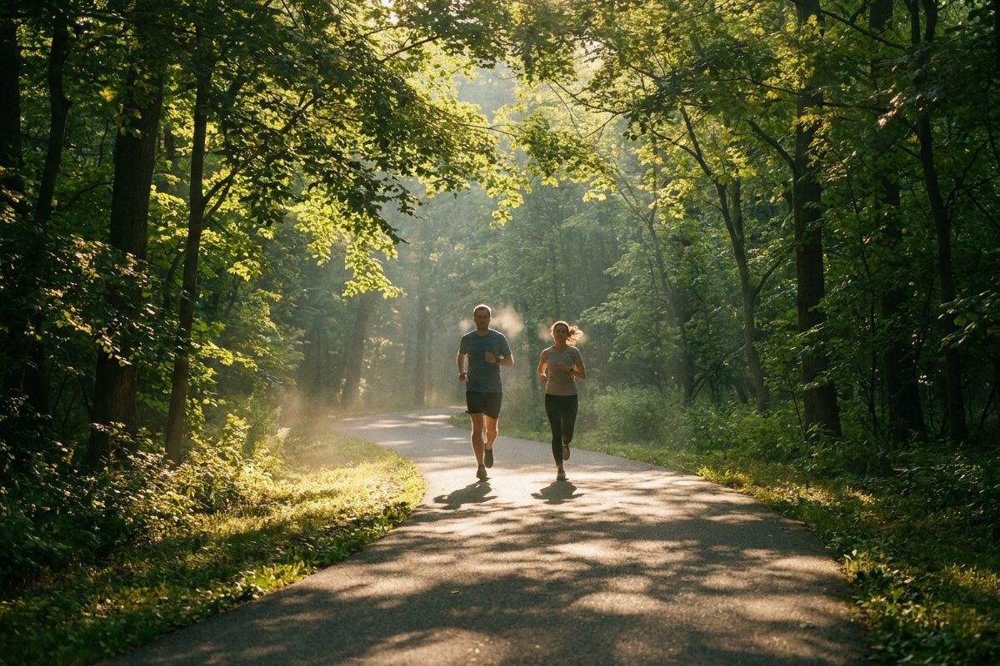

4 МаршрутыГде бегать в Симферополе: 4 проверенных маршрута + 2 с оговорками
Во вторник клуб собирается у Гагаринского парка и бежит по Салгирке. Ниже — практический разбор шести городских локаций: где провести лёгкую, темповую или длительную тренировку и какие ограничения проверить перед стартом.
Почему в Симферополе важен выбор маршрута
Симферополь компактный, и кажется, что бегать можно везде. На практике у каждого места — своё покрытие, рельеф, освещение и лимит по времени. Маршрут подбирают под задачу тренировки, а не наоборот: длительная на узком асфальте без выхода утомляет, темповая по мокрой плитке после ремонта — рискованна, вечерняя пробежка по неосвещённой аллее — просто опасна.
Разбираем четыре основных места и два запасных варианта. У каждого — своё назначение, покрытие, режим и ограничения. Комментарии о текущем состоянии маршрутов и бытовых деталях основаны на опыте тренера клуба.
Как выбрать маршрут под тренировку
Прежде чем смотреть на конкретное место, определитесь с задачей. Это поможет сразу отсеять неподходящие варианты и не тратить время на разведку.
| Задача тренировки | Что искать | Что избегать |
|---|---|---|
| Лёгкий бег | Ровное мягкое или асфальтовое покрытие, минимум пересечений, понятный выход на любом отрезке | Скользкая плитка после ремонта, плотный поток пешеходов и собак, крутые подъёмы |
| Темповая работа | Измеримый непрерывный участок без светофоров, ровный рельеф, нескользкое покрытие | Узкие дорожки, бордюры, перепады высоты, необходимость тормозить на поворотах |
| Длительная | Возможность безопасно увеличить дистанцию без светофоров, понятный выход в любой точке | Маршрут короче 3 км без разворота, тупиковые петли, отсутствие ориентиров |
| Восстановительная | Мягкое покрытие, спокойный ритм, отсутствие крутых спусков и подъёмов | Сложный рельеф, скользкие участки, мокрый грунт после дождя |
Теперь — к конкретным местам. По каждому маршруту приводим покрытие, рельеф, ограничения и то, для какой тренировки он подходит.
Маршрут 1. Парк им. Ю. А. Гагарина
Самый большой парк Симферополя. По состоянию на конец августа 2026 здесь идёт масштабная реконструкция: новая плитка, асфальт, террасная доска, газонная решётка. Этот парк — исторически главная площадка для стартов и сборов клуба, в том числе для открытой пробежки по вторникам (сбор у входа в парк; маршрут самой пробежки — по Салгирке).
Покрытие и рельеф. В парке поэтапно обновляют покрытие аллей и благоустройство. Работы планируют завершить осенью 2026 года, поэтому перед тренировкой лучше проверить, какие участки открыты.
Дистанция. Петлю можно собирать по центральным и боковым аллеям. Точная длина зависит от того, какие участки открыты на дату пробежки.
Лучшее время. Утро до 9:00, вечер после 19:00. Летом в центре парка жарко, тени мало.
Ограничения. Главное — ремонт. По словам тренера клуба, бегать в парке можно, но на участках с ремонтом некомфортно. Перед тренировкой стоит заглянуть в парк или проверить актуальный статус в официальных каналах администрации. На участках со свежей плиткой иногда скользко.
Для какой тренировки подходит. Лёгкий и восстановительный бег, а также сбор перед открытой клубной пробежкой по вторникам. Темповая и длительная тренировки возможны с учётом обходов ремонтных зон.
Маршрут 2. Набережная Салгира и Дорожка здоровья
Линейный маршрут вдоль реки Салгир, 5,9 км от аллеи Славы до плотины Симферопольского водохранилища. Это не парк, а именно набережная с твёрдым покрытием.
Покрытие и рельеф. Бетон и плитка, ровный профиль, перепад высот минимальный. На длинных отрезках удобно держать стабильный ритм, но возле мостов встречаются переходы со светофорами.
Дистанция. 5,9 км — историческая длина «Дорожки здоровья», оборудованной в 1982 году к 60-летию СССР по инициативе клуба любителей бега «Панацея». Через каждые 100 метров когда-то стояли чугунные плиты с отметками пройденного и оставшегося расстояния, до наших дней они сохранились не везде.
Лучшее время. Утро до 10:00 или вечер после 18:00. В жару на открытой набережной тяжело.
Освещение. По словам тренера клуба, фонари есть на большей части маршрута, но не на каждом участке. Перед вечерней пробежкой проверьте выбранный отрезок и возьмите фонарь, если уходите далеко от центральной части набережной.
Туалеты. По словам тренера клуба, туалет есть только возле музыкального училища или на автовокзале. На самой набережной инфраструктуры нет, рассчитывайте на свои запасы воды.
Ограничения. Велосипедисты и пешеходы в выходные утром создают плотный поток, особенно возле мостов. В тёмное время суток средняя часть маршрута оживлённее, чем кажется.
Для какой тренировки подходит. Длительная, темповая и восстановительная — на любом отрезке, который подходит вашему уровню. Конкретный объём и темп подбирает тренер клуба. Это рабочая лошадка для регулярного любителя.
Маршрут 3. Парк им. Т. Г. Шевченко
Небольшой, но обновлённый парк в центре Симферополя. После реконструкции 2025 года здесь появилась эргономичная беговая дорожка по периметру с ночной подсветкой.
Покрытие и рельеф. В парке проложена ровная беговая дорожка с ночной подсветкой по периметру. Рельеф спокойный, перепадов почти нет. После дождя проверяйте сцепление перед ускорениями.
Дистанция. По словам тренера клуба, круг по периметру — около 800 м. На первой тренировке удобнее ориентироваться на время и самочувствие, а не на количество кругов.
Лучшее время. Вечером подсветка помогает видеть покрытие. Утром в парке обычно спокойнее.
Ограничения. Малая длина круга. Решается просто: больше кругов или сочетание с маршрутом по улице. В выходные днём на дорожке гуляют родители с детьми, лучше выбирать раннее утро или поздний вечер.
Для какой тренировки подходит. Лёгкий бег, восстановительная, первая пробежка после долгого перерыва. Для темповой и длительной — только если готовы к многократным кругам.
Маршрут 4. Стадион Локомотив
После реконструкции вокруг поля оборудовали восемь круговых дорожек по 400 м с синтетическим покрытием.
Покрытие и рельеф. Синтетическое монолитное покрытие, ровное, с хорошим сцеплением. Рельеф ровный, без перепадов. Подходит для интервальных тренировок и отработки темпа.
Дистанция. Один круг — 400 м. Объём и схему интервалов подбирает тренер клуба под ваш уровень и задачу.
Лучшее время. По словам тренера клуба, можно бегать. Точный режим работы стадиона на 2026 год стоит уточнить на месте или у администрации. Интервалы лучше делать при хорошем дневном свете, вечером — под освещением.
Ограничения. Главный минус — монотонность. Длинные пробежки на стадионе утомляют психологически, поэтому их редко делают на кругах. Плюс — при сильном ветре дорожки продуваются.
Для какой тренировки подходит. Темповая работа, короткие и средние интервалы, отработка соревновательного темпа. Для лёгкого бега — избыточно, но возможно.
Ботсад КФУ им. Н. В. Багрова — с ограничением по времени
Ботанический сад Крымского федерального университета имени В. И. Вернадского носит имя Н. В. Багрова. Сад создан в 2004 году на базе парка-памятника «Салгирка» и занимает более 32 га. На территории сохранились усадьбы академика П. С. Палласа и графа М. С. Воронцова. Адрес — проспект Академика Вернадского, 2.
В Симферополе «Салгиркой» называют набережную реки Салгир. Ботанический сад КФУ раньше также называли парком Вернадского.
Покрытие и рельеф. Старые аллеи, частично плитка, частично утрамбованный грунт. Под ногами — корни деревьев, поэтому на незнакомых тропах легко подвернуть ногу. Для регулярных тренировок это второй эшелон после парка Гагарина.
Режим работы. Плату за вход не берут. По словам тренера клуба, летом сад открыт до 19:00, зимой — до 18:00. Актуальный режим лучше уточнить на входе.
Главное ограничение. По словам тренера клуба, бегать в Ботсаду можно, но заканчивать пробежку нужно к 19:00, иначе можно встретить закрытые ворота или охрану. На практике это значит, что вечерняя тренировка после работы здесь не получится, лучше идти на парк Шевченко или Дорожку здоровья.
Для какой тренировки подходит. Лёгкий бег по знакомым аллеям утром или в первой половине дня. Темповая и длительная в Ботсаду неудобны: аллеи короткие, рельеф неровный, много пешеходов.
Стадион Фиолент — только неофициально
Стадион «Фиолент» — ещё одно место, о котором спрашивают. По словам тренера клуба, официально сейчас закрыт на ремонт, беговая дорожка снята. Неофициально там можно бегать, но это не тренировочная площадка, а скорее запасной вариант.
В этом гайде мы не рекомендуем стадион Фиолент как основной маршрут, потому что покрытия нет, режим работы неизвестен, и проверять актуальный статус нужно каждый раз. Если других вариантов нет и вы понимаете, что делаете, — пробежка по грунту возможна. Если есть выбор — лучше идти на Дорожку здоровья или в парк Шевченко.
Как собрать тренировочную неделю из этих маршрутов
Расписание клуба ПРОБег: открытая пробежка во вторник в 20:00, темповая или интервальная в среду в 19:00, ОФП в пятницу в 19:00, длительная в воскресенье в 09:00. Конкретные места и формат тренировок — на усмотрение тренера и участников.
Ниже — недельные ориентиры, а не готовые рецепты. Объём, темп и длительность подбирает тренер клуба под ваш уровень и состояние. Подробнее про логику недельных циклов — в статье про подготовку к забегу 5 и 10 км, про длинную пробежку — в статье про длинную пробежку.
Новичок (3 тренировки в неделю):
- Вторник 20:00 — открытая пробежка с клубом. Темп подбирается под группу, отстать невозможно.
- Четверг вечер — самостоятельно, парк Шевченко, круги по беговой дорожке с подсветкой.
- Воскресенье 09:00 — длительная с клубом (локация по согласованию с тренером).
Регулярный любитель (4-5 тренировок):
- Понедельник — лёгкий восстановительный бег, парк Шевченко или Салгирка.
- Вторник 20:00 — открытая пробежка с клубом.
- Среда 19:00 — темповая или интервалы (место и схему задаёт тренер).
- Пятница 19:00 — ОФП с клубом.
- Воскресенье 09:00 — длительная с клубом.
Безопасность и гидратация на городском маршруте
Городской бег в Симферополе — это тротуары, переходы, собаки, велосипедисты и не всегда хорошее освещение. Правила, которые тренер клуба проговаривает на каждой открытой пробежке:
Видимость и пересечения. В парке Гагарина на время реконструкции часть аллей перекрыта, обходите ограждения, не срезайте через технические зоны. На набережной Салгира в районе мостов есть пешеходные переходы со светофорами, в тёмное время суток их легко пропустить. Светоотражающие элементы на одежде особенно полезны вечером и в пасмурную погоду.
Наушники. В одном ухе можно, в двух — нежелательно. На открытой клубной пробежке тренер просит оставлять одно ухо свободным, чтобы слышать команду и окружающий трафик.
Гидратация. В жару и на длительной тренировке берите воду с собой. Нужный объём зависит от погоды, продолжительности, интенсивности и индивидуального потоотделения. Заранее продумайте, где пополнить запас воды. Подробнее про питьевой режим — в статье про бег в жару, про одежду и адаптацию — в материале про бег в межсезонье в Крыму.
Сообщите близким маршрут. На длительной пробежке по Дорожке здоровья — простая привычка: отправить кому-то из близких сообщение «Я на Салгирке, до 11:00». Если что-то случится, вас быстрее найдут.
При боли в груди, резком головокружении, потере ориентации — остановитесь и обратитесь за медицинской помощью. Тренировка не стоит здоровья.
Частые вопросы
Где лучше начать бегать новичку в Симферополе?
Самое спокойное место для старта — парк им. Т. Г. Шевченко: беговая дорожка по периметру с ночной подсветкой, ровное покрытие, минимум пересечений. По словам тренера клуба, длина круга — около 800 м, удобно контролировать время и пульс. Второй вариант — Дорожка здоровья вдоль Салгира: около 5,9 км линейного маршрута, но начать можно с любого отрезка по 10-20 минут и развернуться.
Где провести длительную пробежку без частых остановок?
Дорожка здоровья вдоль Салгира — около 5,9 км линейного маршрута от аллеи Славы до плотины Симферопольского водохранилища, оборудована в 1982 году по инициативе клуба любителей бега «Панацея». Покрытие ровное, перепадов почти нет. Если нужно длиннее, можно развернуться и добежать ещё 3-4 км по той же дорожке в обратном направлении. Подробнее про логику длительной — в статье про длинную пробежку.
Где бегать вечером и как проверить освещение маршрута?
В парке им. Шевченко беговая дорожка по периметру имеет ночную подсветку. На стадионе Локомотив, по словам тренера клуба, можно бегать вечером, но режим доступа лучше уточнить заранее. На набережной Салгира освещение есть не на каждом участке, поэтому перед вечерней тренировкой проверьте выбранный отрезок и возьмите фонарь.
Можно ли бегать в Ботаническом саду КФУ?
Можно, но с ограничением по времени: по словам тренера клуба, летом пробежку нужно заканчивать к 19:00, зимой — к 18:00. Ботсад КФУ им. Н. В. Багрова находится на проспекте Академика Вернадского, 2; плату за вход не берут. Для длительного бега удобнее Дорожка здоровья вдоль Салгира: она длиннее и не имеет жёсткого лимита по времени.
Где проходят тренировки клуба ПРОБег?
Открытая пробежка клуба ПРОБег проходит по вторникам в 20:00, сбор у Гагаринского парка, маршрут по Салгирке. Участие без оплаты, формат — лёгкий бег в группе на 40-60 минут. По средам в 19:00 — темповая или интервальная работа, по пятницам в 19:00 — ОФП, по воскресеньям в 09:00 — длительная пробежка. Расписание может меняться, актуальные даты — на главной странице. Подробнее о клубе и тренере — в статье «Тренер по бегу в Симферополе».